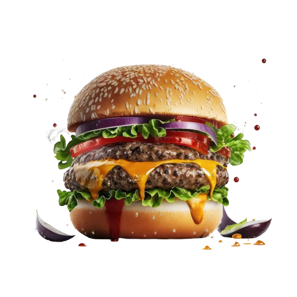
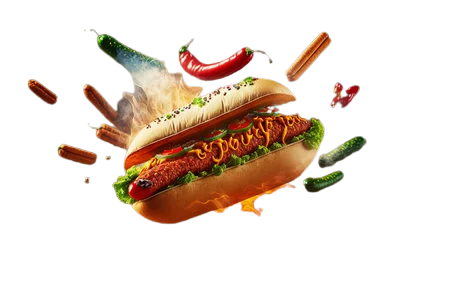

Las hamburguesas son otro alimento popular en todo el mundo. Consisten en una carne de vacuno molida formada en
una hamburguesa y cocida a la parrilla o en una plancha, generalmente servida en un pan redondo y acompañada de
diversos ingredientes como lechuga, tomate, queso, cebolla, tocino, salsa y otros aderezos.
Las hamburguesas se pueden encontrar en una amplia variedad de lugares, desde restaurantes de comida rápida
hasta restaurantes gourmet que ofrecen hamburguesas elaboradas con ingredientes de alta calidad. Son una opción
popular para aquellos que buscan una comida sabrosa y satisfactoria.
Al igual que los perros calientes, es importante recordar que las hamburguesas también pueden contener altos
niveles de grasas saturadas y sodio, por lo que es recomendable consumirlas con moderación y acompañarlas con
opciones más saludables como ensaladas o verduras frescas.

Los perros calientes son una popular comida rápida que consiste en una salchicha en un pan acompañada de
diversos condimentos.
Aunque son convenientes y económicos, es importante recordar que no son la opción más saludable debido a su alto
contenido de sodio
y aditivos. Se recomienda consumirlos con moderación y acompañarlos con opciones más saludables.